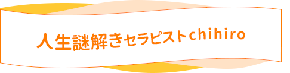
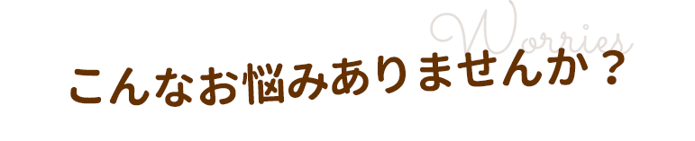
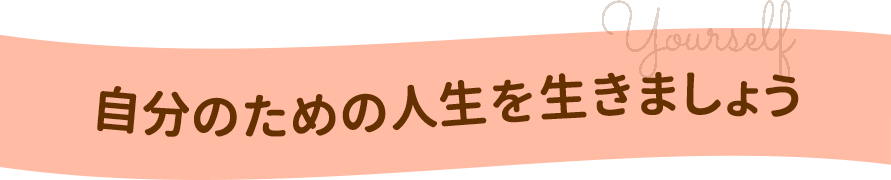
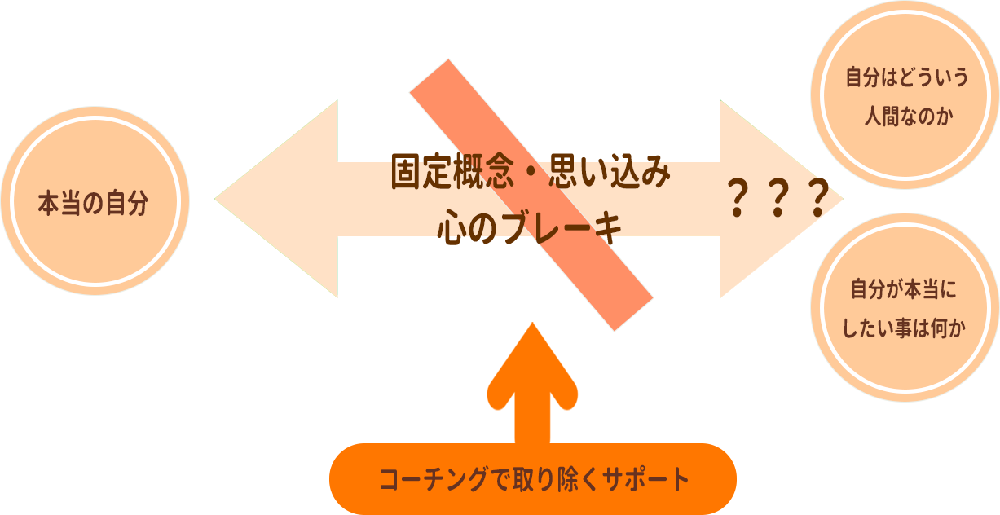
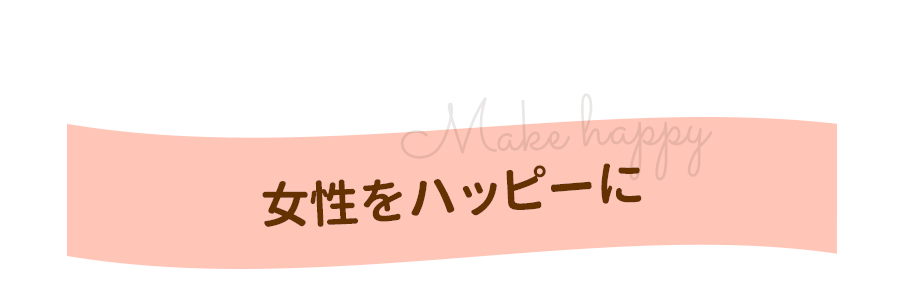

望む人生を手に入れるために
半年間マンツーマンコーチング
人生謎解きセラピストchihiro
プロモーションビデオ



コーチングは双方向、個別対応、現在進行形の基本三原則の考えに基づいて行われます。
体験コーチングであなたの課題が見えてきますので、 課題に沿って心のブレーキを取り除くサポートをしていきます。

悩みが複雑に絡み合っているように見えますが、実は人生が思うようにいかない原因はたった1つ。 「本来の自分が見えていないこと」にあります。
固定概念や思い込みで、心にブレーキをかけて「自分が本当にしたい事は何か？」「自分はどういう人間なのか」を見失っています。
体験コーチングであなたの課題が見えてきますので、 課題に沿って心のブレーキを取り除くサポートをしていきます。
一般的なコーチングスクールやコーチング講座ではビジネス向けコーチングや資格取得スクールが多く、個人コーチングは短期間コーチングが主流です。
人生謎解きセラピストchihiroでは、半年間の個人サポートで本来の自分に戻る事で 本当に望む人生を自ら作っていけます。
まだ見ていない自分に出会うことで「楽しい」があふれる毎日にしませんか？

CHIHIRO SAKURADA
訪問営業の会社で営業職につき、2年目にはマネジメント業務、4年目には人事業務とキャリアを広げ自分の生長を実感しながら働いていました。 しかし29歳の時には「このままでいいのだろうかという迷いが出てきて、転職も考えながら4年間も現状維持が続きました。
2019年6月にあるポータルサイトを通してメンターとなる方と出会い、お話を聞くことでモヤモヤが吹き飛びました。
8月にご紹介頂いたコーチングスクールに参加して、最終的にはフリーで働こうと退社を決意してしまうほど事が進みました。 コーチングスクールはフリーで働く事が当たり前という考え方の方が集まっていて、その生き生きとした環境の中で学ぶうち に自然と決意しました。この頃の出会いと決断が今の私を創っていると思っています。
現在は様々な方とコラボしてビジネスをさせていただきながら、悩める女性の「本当に望む人生を創っていく」ためのサポートを行っています。
Yさん（女性）
以前の私は表現で独立したいと漠然と思っていたけど、それが何なのかのイメージはありませんでした。
いつも一歩引いて他人優先で自分に自信がなく、未来への不安からやりたくてもやれないジレンマの中にいました。
単発のセッションは他で何度か受けた事があったけど忘れてしまうし元の自分に戻ってしまう。 でも継続だとフォローが手厚くて心を育ててもらえたんだなと思います。
継続を受けるようになって言いたい事が言えるようになったし、積極的になりました。 以前から趣味で描いていたアクリル画を思い切って販売してみたら売れるようになり、副業になりました。
今では思考が整理されて変なストレスがなくなり、これが本来の自分だったんだなと思えます。 知り合いは良い事しか言ってくれないけど、chihiroさんはハッキリ言ってくれるから信頼できます。 こんな私によく付き合って下さったなと思います。
Mさん (女性)
今まで仕事でミスをするといつも自分を責め過ぎていました。
でも「自分を愛する事や自分自身を認めて上げる事」を数か月学んだおかげで、
今では「やってしまった事は仕方ない。次気を付けよう。」と思えるようになりました。
ミスをしたのに今日はなんだか嬉しい気分です。
M.さん（女性）
過去の自分がどれだけ今の私に影響があるか知りたくて体験を受けて、自己を見つめ受容していくことで
世の中に発信していけるようになると言われました。
”発信する事が広がるってなんて素敵！それって何だろう？もっと自分を知りたい!”
と思えたし、chihiroさんのなんとも言えない良い圧が
”この人を信じて良いかも”と思えて継続を決めました。
N.S.さん（女性）
コーチングに興味があって体験を受けようと思いましたが、30分過ぎていても本気で
伝えてくださった気持ちが嬉しくて継続したいと思えました。
私に必要なタイミングで出逢えたおかげで一歩踏み出す事ができました。
T.M.さん（女性）
体験のサービスを提供するからというセールスは何度も受けたことがあるけど、「Tちゃんとは縁が深いし、
継続してサポートしたいと思ってる」と言われました。
あなたをサポートしたいと言われた事は初めてで、純粋に嬉しかったです。
人に頼るのが苦手な私でも、本当に困った時に素直に話せる方だなと思いました。
その人の中にある答えを引き出し、行動に結び付け、夢の実現や目標の達成へのスピードを速めるコミュニケーションスキルのことです。 あなたの中にある能力・可能性・自主性を引き出し、より良い人生を歩 むことをサポートします。
カウンセリングでは、病気やトラウマの改善というような治療的な側面があり、心理的な機能を回復するために時間を使います。
カウンセリングは、基本的に「過去に向かってWhy？」を問うのに対して、
コーチングは「未来に向かってHow？」を考え実際の行動を促すことに焦点を当てると言えます。
コ ンサルティングでは、専門家が問題解決のために専門知識に基づいて分析したり、情報の提示やアドバイスを行います。
一方コーチングでは、クライアントの役に立つ情報はもちろん提供しますが、
あくまでクライアント自身が問題解決に必要なリソース（資源）を見つけ、
自主的に意思決定をすることに力点を置きます。
コーチングのテーマはキャリアチェンジ、人間関係の改善、ストレスマネジメントなど、人生全般に及びます。
話すテーマは基本的にクライアントが決めます。
結果が出る人は、素直で行動力がある人です。また自分が立てた目標にコミットし、コーチングを日常的に取り入れられている方が多いです。
反対に中々結果が出ない人は、素直さがなく行動しない人です。また依存心が強く、期間内に目標達成することにコミットしていない方は難しいです。
月2回（1回1.5時間）×６ヶ月となります。
また契約期間内はLINE使い放題で必要に応じてフォローセッションも行います。

実際に相談に来られる方は「やりたいことを見つけたい」とか「自分を知りたい」と言われる方が多いです。
あなたは今の人生に心から満足していますか？
そろそろ自分のための人生を歩みませんか？
自分が望む人生が明確になれば、仕事もパートナーも望むままに創造する力があなたにはあります。 ただ、一人でそれを出来る人はいません。成功者はみな人の力を借りているのです。
頑張り屋で優しいあなただからこそ、まずは 「自分がもっと幸せになることに許可をだす」ということをして欲しいのです。
「自分が最高に幸せ」という状態をみんなが実現できれば、周りは全てハッピーになるはず。 皆がそれぞれ自分で自分を幸せに出来るようになれば、争いだって無くなると思います。
一人でやるのではなく、みんなで協力しあって、カバーしあって、ハッピーになれば周りは すべて素敵な人であふれていきます。そのベースは女性が輝く事。女性が輝く社会はハッピーな社会ですからね！
身内やお友達には相談出来ない事や、悩みだけでなく愚痴でもかまいません。
是非、一緒にお話しませんか？
あなたの心に寄りそえるようお待ちしております。
体験コーチングのご利用だけでも大歓迎です!!
30分無料体験コーチング
人生謎解きセラピストchihiro 公式LINEリッチメニューから お申込みフォームへご記入をお願いいたします。